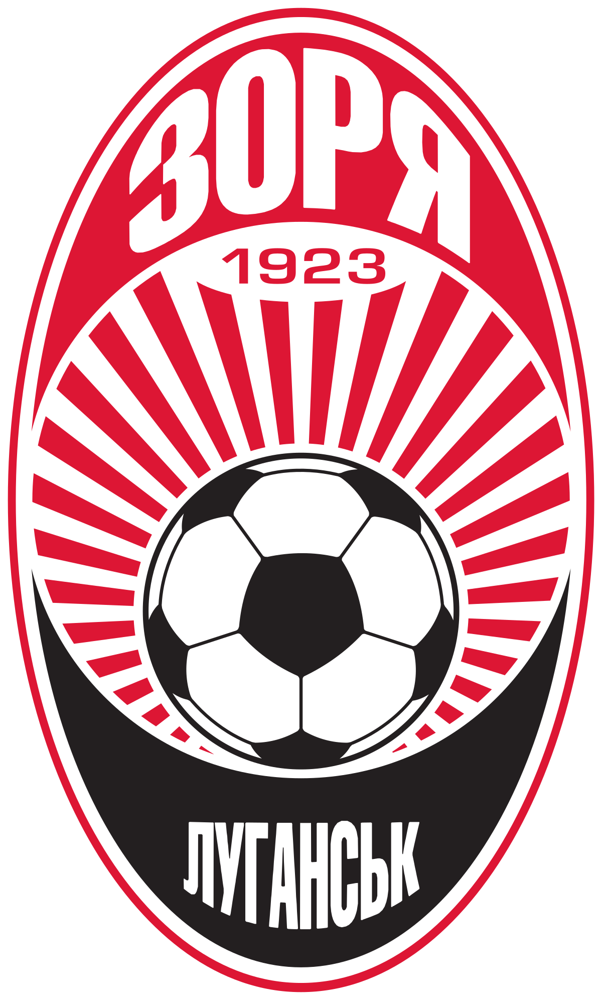

Увага до тактичних схем дуже важлива
Ви тренер ФК Зоря Луганськ
Оберіть тактику на наступний матч
Футбольний тренер - це ключова фігура в команді, яка відповідає за підготовку та розвиток гравців. Його робота починається з ретельного аналізу суперників і розробки тактики для кожного матчу. Тренер вивчає сильні та слабкі сторони команди і працює над покращенням гри. Усі тренування під керівництвом футбольного тренера спрямовані на підвищення фізичної справності гравців, вдосконалення їхньої техніки та розвиток стратегічного мислення. Він вчить команду співпрацювати, адаптуватися до змін у грі і виходити на поле з впевненістю. Футбольний тренер також відповідає за моральний дух команди і мотивацію гравців. Він є лідером, який надихає свою команду на досягнення великих результатів. Його робота вимагає великої відданості, знань і вміння керувати гравцями, але вона також є надзвичайно важливою для успіху футбольної команди.
Поточна позиція команди: 3
Найкращий бомбардир: Русин (16)
Найкращий асистент: Гереро (7)
Наступні суперники: Шахтар, Оболонь, Лестер